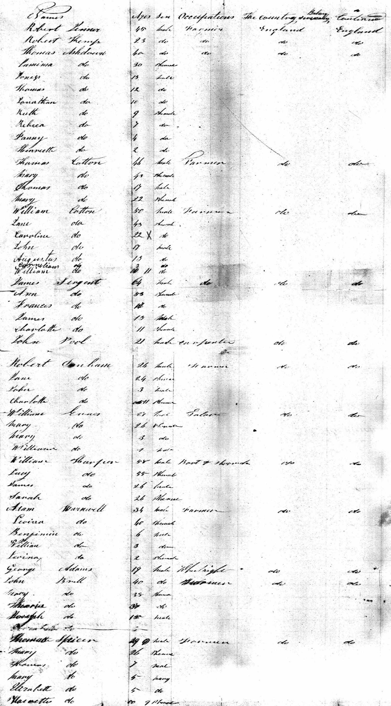
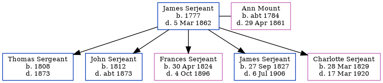

James Serjeant 1777 - 1862
[ Home ] | [ Calendar ] | [ Surnames Index ] | [ Errors ] | [ Family History ]James Serjeant, the husband of Ann M Mount (the five times great-aunt of Nigel Horne), was born in Kent, England in 1777 and married Ann (with whom he had 5 children: Thomas, John, Frances Elizabeth, James Edward and Charlotte) in Chislet, Kent, England on 10 Nov 18061 (Recorded at St. Nicholas). In 1841 he travelled from London, England to New York, New York, USA (arrived on the Wellington), arriving on 14 May with his wife, Ann M and all of his children.
He died on 5 Mar 1862 in Allen, Indiana, USA.
Children
- Thomas was born in 1808
- John was born in 1812
- Frances Elizabeth was born on 30 Apr 1824
- James Edward was born on 27 Sept 1827
- Charlotte was born on 28 Mar 1829
Citations
- Kent, England, Tyler Index to Parish Registers, 1538-1874 Online publication - Provo, UT, USA: Ancestry.com Operations, Inc., 2010. This collection was indexed by Ancestry World Archives Project contributors.Original data - Frank Watt Tyler. The Tyler Collection. Canterbury, Kent, England: The Institute of Herald
Media
1841 Wellington Passenger List

Canterbury Marriage Banns Transcription - GBPRS-CANT-M-94015737-1
England Marriages 1538-1973 Transcription - R_847899466
Canterbury Marriage Banns Transcription - GBPRS-CANT-M-94015737-2
Family Tree
Map
Generated by ged2site. Last updated on Jul 3, 2024
Known Issues
Birth date (1777) has no citations
Death date (5 Mar 1862) has no citations